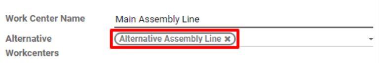

Configuration¶
Before a work center can be designated as unavailable, the Odoo platform must be properly configured. First, it is necessary to enable developer mode. This allows the Time Off smart button to appear on each work center’s Working Hours pop-up window.
Enable developer mode by going to , scrolling to the bottom of the page, and clicking Activate the developer mode under the Developer Tools heading.
Next, install the Time Off app. This is the app used for assigning time off to all resources
within Odoo, including employees and work centers. Navigate to , then type
Time Off in the Search… bar. The card for the Time Off module should be
the only one that appears on the page. Click the green Install button on the card to
install the app.

The last step is to properly configure work centers. For this workflow, it is necessary to have at least two work centers: one that is made unavailable and a second that receives the work orders that the other cannot accept. If no second work center is configured, Odoo cannot route work orders away from the unavailable work center and they will pile up in its queue.
To create a work center, navigate to .
Make sure that both work centers have the same equipment listed under the Equipment tab. This ensures that operations carried out at one work center can also be performed at the other.

For the work center that will be made unavailable, select the second work center on the Alternative Workcenters drop-down menu. Now, Odoo knows to send work orders to the second work center when the first is unavailable for any reason.
Add time off for a work center¶
With configuration completed, time off can now be assigned to the work center that will be made unavailable. Begin by navigating to and selecting the affected work center. Click Edit, and then the ↗ (external link) button next to the Working Hours drop-down menu.

A pop-up appears, titled Open: Working Hours. The standard working hours for the work center are listed here, along with various other details about it. Since developer mode was enabled, there is a Time Off button in the top right of the pop-up. Click it to be taken to the Resource Time Off page.

On this page, click Create to configure a new time-off entry. On the time-off form, note the Reason for the work center closure (broken, maintenance, etc.), select the affected work center as the Resource, and choose a Start Date and End Date to specify the period during which the work center will be unavailable. Click Save and the time off for the work center is logged in Odoo.

Route orders to an alternative work center¶
Once a work center is within its specified time-off period, work orders sent to it can be automatically routed to an alternative work center using the Plan button.
Begin by creating a new manufacturing order by selecting . On the manufacturing order form, specify a Product that uses the unavailable work center for one of its operations. Click Confirm to confirm the work order.
On the confirmed work order, select the Work Orders tab. By default, the unavailable work center is specified in the Work Center column. There is also a green Plan button on the top left of the page.

Click Plan and the work center listed under the Work Orders tab is automatically changed to the alternative work center.

Once the time-off period for the unavailable work center ends, Odoo recognizes that the work center is available again. At this point, clicking the Plan button does not route work orders to an alternative work center unless the first one is at capacity.